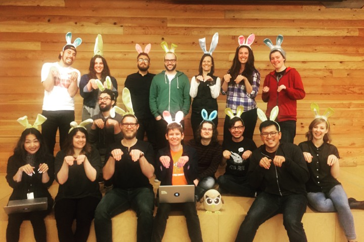

Kirsty Traill has done it all. Currently the VP of Customer at Hootsuite, she has spent the last 15 years building a versatile portfolio around the globe.
While Kirsty’s initial focus was on Business Development and Marketing, in 2012 she switched things up and began working in customer success – a decision that changed her life.. She now manages budgets in the millions and teams of over 100 spanning the globe, there isn’t much she doesn’t know about delivering a customer experience that not only satisfies but also delights while optimising business operations.
For the past four years, Kirsty has been in charge of Voice of Customer at Hootsuite, a worldwide leader in the SaaS space. With more than 16 million users in over 175 countries, she manages a global multi-channel team of 80+ people, determined to woo their customers 24 hours a day, 7 days a week by going above and beyond.
This interview was so major, we turned it into a two-part mini series (if you missed the first one, you’ll find it here). We are rounding out on part two now, and we’re going to cover:
- How to manage global teams and their KPIs
- How to pitch your ideas to product teams effectively
- The future of customer support
Before we get started – we’ve done several fascinating interviews with support leaders at Google, Basecamp, and Front. Here, we’ll be touching on many of the same topics. It’s amazing to compare the different trends coming to light among these customer support leaders. Be sure to check those interviews out too :-)
With that – re-meet Kirsty!
I want to talk about the mechanics of the team for a minute. How do you track and monitor whether everyone is doing well? Do they have KPIs, and what’s in place to monitor that?
At the broader level, my team is measured on a number of things.
One thing to note before we get into how the KPIs roll out is that we kind of have two businesses.
We have a self-serve business, which is a freemium model, volume-based business. We also have an enterprise business. We measure most of the metrics that I am going to talk about for both these business separately.
via Hootsuite
The first thing we measure is customer retention – account retention by self-serve and enterprise.
For enterprise only, we measure our up-sell and our renewal book of business by looking at percentage of achievement to quota.
For both self-serve and enterprise, we measure net promoter score (NPS). Tomasz Tunguz, a venture capitalist at Redpoint Ventures writes a lot of articles around SaaS-based businesses, benchmarking, and all that good stuff.
They’ve recommended a B2C benchmark of 40 as an NPS that would be focusing on the self-serve business, and then a B2B benchmark for enterprise customers at 25. We use those as our benchmarked NPS goals.
One of the biggest mistakes I see is people confusing NPS and CSAT. Anyone that tells me, “Oh, we have an NPS of 90”, usually what that means – unless they’re an Apple or a Zappos – is that they are sending a transactional survey after a support interaction, and what they are really measuring is customer satisfaction – not NPS.
You need to be able to differentiate between measuring that promoter with a “refer or recommend” question vs. measuring customer satisfaction. Both are important but quite different sets of data.
At a more overarching level, as is widely understood in the industry, employee engagement is critical to delivering amazing customer experiences, so we measure our employee engagement as well.
At the customer support level, we have two core metrics. Our number one metric is CSAT, and we have benchmarks 97% for enterprise and 92% for self-serve.
This is done through a survey sent after a support issue resolution. Once support issue has been closed, the customer gets an email survey that asks the question: “How satisfied were you with the quality of service you received today?”
This is a great measure of the quality of the service the team gave, which has an impact on the customer’s desire to continue to do business with your company.
The other thing we measure is first response time.
There is a high correlation between the speed of response – not an automated bounce-back if you are talking about emails, but the first time the customer support team actually interacts with the customer – and customer satisfaction.
And it makes inherent sense – if you see a fast response, you are likely to be more predisposed to having a good quality experience.
We have a variety of different service-level agreements for enterprises, the core being four hours.
We also offer premium services where we guarantee a response within two hours for some of our enterprise customers, and then six hours in our self-serve business.
This also gives the advocates (which is what we call our Customer Support team) a sole target that acts as a guideline of what’s expected of them. As they become more tenured, their targets go up – but it’s not hard and fast.
We allow our advocates to have specializations and to take on other projects, which might impact their productivity, but helps promote employee engagement, and job satisfaction, as well as having a business impact in their specialization..

via Hootsuite
The numbers we want people to hit are the customer satisfaction targets and the first-response-type targets. This works as a great guideline of where we expect the team to be.
It allows us to ensure the advocates are taking the appropriate level of care with customers, but also that they are able to grow and learn and are responding and managing themselves to a support volume we expect of them.
Then we incentivize the team overall by setting group targets for each regional team. As teams hit their targets for the quarter, they unlock a pool of funding for them to go and do whatever they want with their team.
via Hootsuite
It’s a significant enough amount of money that in the past, the teams have gone away for a weekend together, organised dinners out, gone to the movies, bought beanbags for the office, etc.
The teams have quite a high degree of latitude in terms of how they want to use that funding every quarter assuming that they hit the target.
That is awesome. It makes targets less self-serving and more of a team sport, which is really encouraging.
In the beginning of incentivising the team, we originally launched it on an individual basis, and the teams came back to us and they said, “We don’t really like this. It’s encouraging self-serving behavior. We are starting to get really competitive, and this should be collaborative.”
And they actually positioned, “Can we do this as a team basis?” And we were like, “That is a great idea.”
All in all, a team-focused approach to goals has had a really positive impact on the way we work.
How are you collecting this data for NPS and the customer satisfaction data?
There are a couple of different things we do.
First of all, we measure our NPS in the product. We’ve set up a couple of different parameters to measure net promoter support at month three and month nine.
For our enterprise business, month nine gives us a better understanding three months before the renewal comes up as to how customers are feeling about us.
And from there, it’s important to close the loop internally to ensure customer success managers are receiving that feedback and taking the appropriate action.
Having the survey directly in the product, we find response rates are up around the 40% mark which provides us with a significant amount of data for us to action.
How do you do it within the product exactly?
When you log in within a certain timeframe, we use an external provider called Wootric, which pops up a ruler in the dashboard and asks the NPS question.
The user answers, and then they are asked why they gave us that score. The user then hits submit and all of that pumps out into the Wootric platform for us to review.
I have a customer insights analyst on my team, who works to analyze all of that data on a monthly basis and reports out on the score, as well as the sentiment of customers.
She also works internally with the teams to close the loop on this customer feedback. She engages with the customer success team on which customers gave us higher scores and which customers gave us lower scores, and then working back with teams like product, where she’s identified the top three things that our customers are asking for that we need to deliver.
We also analyze our customer support data and use that data to go back and make improvements to the business from a customer experience standpoint. That’s one of the other important data points we use.
We’ve got six different customer journey stages, and we have one key survey at each stage of the journey that gives us a barometer of how customers are feeling at each stage of their journey with Hootsuite.
We look at that in an overarching manner to understand where the same kind of customer feedback is showing up across multiple data sources, and then we work on the way we take that data and use it to make improvements for our customers.
How do you use it to make improvements? How do you make the case to product to make stuff happen?
My analyst will pull together a business case which summarizes all the feedback about the specific issue, and she’ll calculate its cost to the business, some verbatim comments of what our customers are saying, and what we think will happen when we action the feedback.
For example, we believe that increasing our NPS score by five points will add X million dollars to the business, and this is the number one piece of NPS feedback.
Then, the product team needs to go and scope what those are and the effort involved, and from there it’s just a basic return on this model. Is it one week, is it one month, is it one year?
What is the scope of the project, how longer is it going to take, and what do we think we are going to be able to get from that? What’s the opportunity cost of us doing this vs something else? Then it becomes just a prioritization exercise.
Would you suggest the changes the product team should make or would you simply give the facts and they are responsible for the solution?
Well, it differs, because we can’t report to know everything, and when you work with a product team, there is ultimately a number of different solutions to any given problem.
We’ll sometimes make some suggestions, but the key value of what we provide is highlighting what customers are saying, underlining those pain points, and working with the product teams to say, “How could we fix this? How could we make this better?”
From there, it’s about pulling together a road map of what fixing this issue looks like, then holding those teams accountable for delivering on that.
What do you see as the future of customer support?
There are a number of things. We are already starting to see this, but support and marketing are converging, particularly when you think about the broader context of customer engagement. This seems to be accelerating particularly in the case of social media.
You can start to see this in things like Facebook Messenger, which is now also provides solutions for chatbots. Getting closer to live chat, we will see these two things really continue to converge and grow.
This is where the automation and artificial intelligence piece comes in. There is a lot of focus on chatbots – all of those mundane, repetitive conversations, freeing humans up to be the point of escalation or to come into play once all of the basic account information has been collected.

I don’t necessarily see humans going away altogether, but I do see the space being pretty disrupted over the next five years.
Today, you may have 100 people managing customer issues. Maybe in the future, it’s going to be 60 or 70 percent managed by bots, and then the remaining people will be reviewing screens of the interactions and monitoring to see that the conversations are on track, stepping in when customers need something out of the ordinary, or as a point of escalation.
I also think this translates if you take it out of automation and take it a bit further into machine learning. Which is another big part of the space – when you talk about voice of customer and customer experience, that’s an area that is starting to emerge as well.
For example – using customer insight to drive meaningful change to the business, product, or process, machine learning is going to have a huge impact in this space.
Being able to mine that unstructured data of what the customers are telling you, the verbatim feedback, at an aggregate level, and then using that to report back to the business will actually free up analysts to get out of the data crunching, tagging of data and feedback, and more into a leadership role.
This frees up analyst time to work on high-level insight sharing and form cross-functional task forces to action those insights to improve the ultimate customer experience.
I think it’s an amazing space to be in, and it’s going to dynamically change over the next few years – and that’s really exciting.